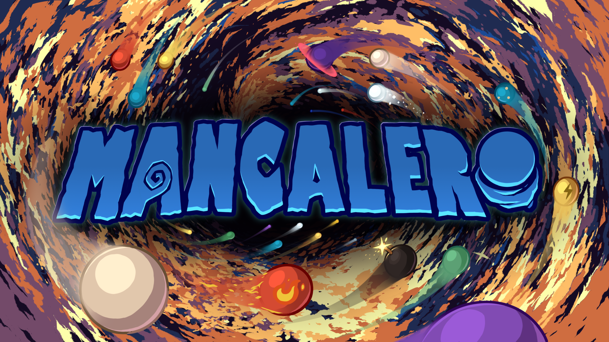
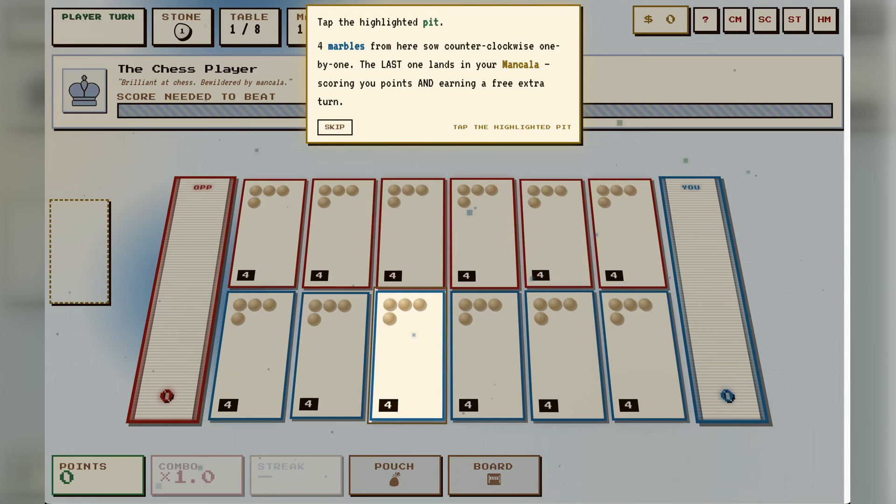
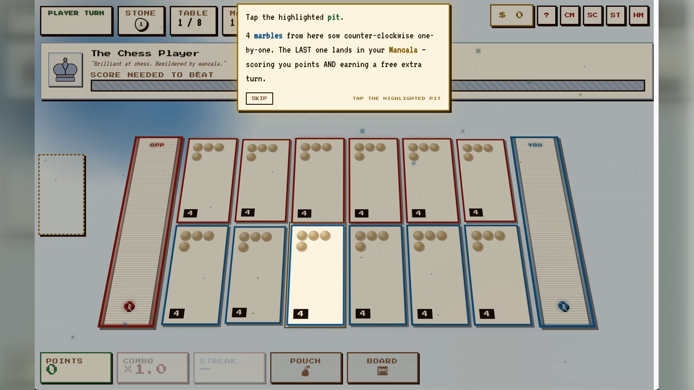
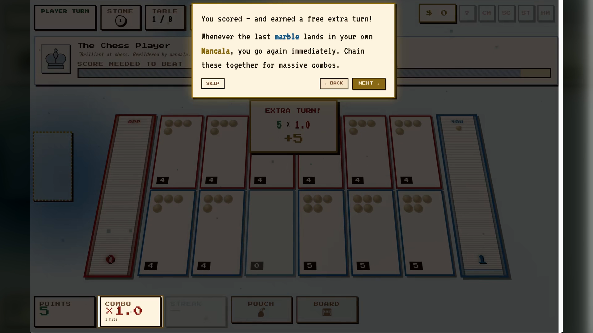
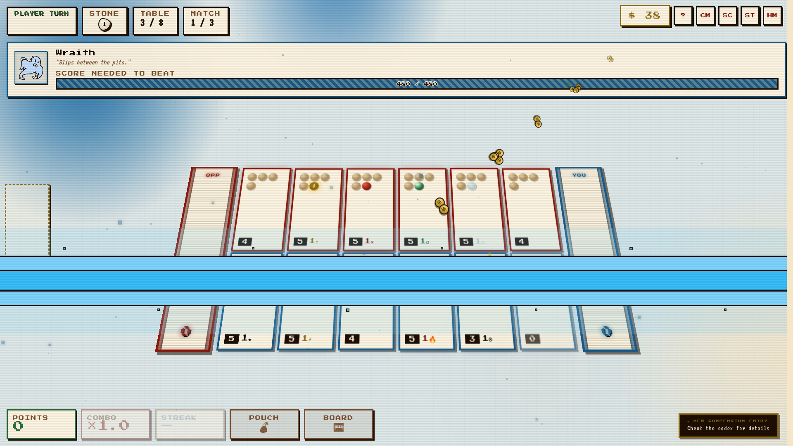
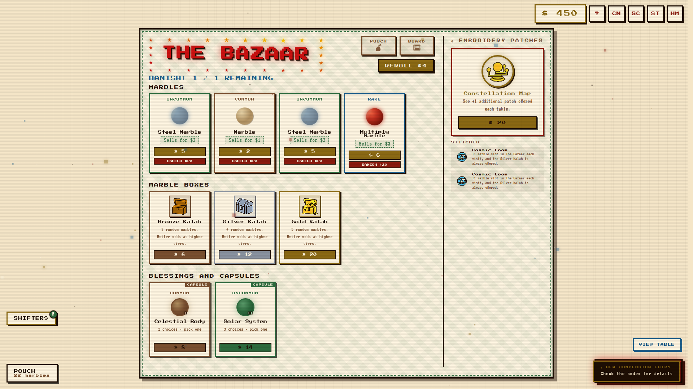
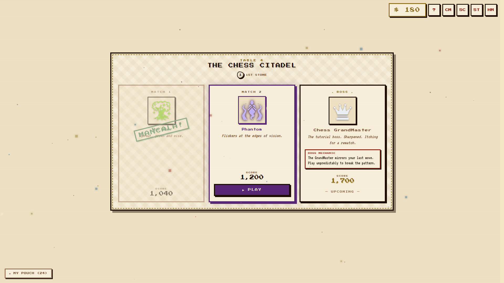

A Mancala roguelike deckbuilder about marbles, combos, and broken rules.
ARCHIUSDEV / PUBLIC MEDIA HUB
Build a pouch.
Break the rules.
Mancalero is a roguelike deckbuilder inspired by Mancala, where special marbles, evolving boards, and rule-changing bosses turn a timeless strategy game into a tactile combo chase.
Playtest: completed Aug 7–16, 2026 · Demo: September 15, 2026 · Release: November 5, 2026

DeveloperArchiusDev
FormatSolo indie game
PlatformWindows · macOS · Linux
GenreRoguelike deckbuilder
01 / PLAY A ROUND
Play one round against Sprout.
Mancalero stripped to its ancient foundation: regular marbles, six pits, two stores, captures, extra turns, and a score to chase.
ROUGH BROWSER DEMO · A compact preview of the core sowing loop, not the full game.
Sow your blue rowRead Sprout’s responseFill your store and score
Sprout“A novice gardener.”
SCORE NEEDED TO BEAT
0 / 120
OPP0
YOU0
POINTS0
YOUR STORE0
SPROUT STORE0
Choose one of your blue pits to sow.
01 / COPY
Universal pitches
Ready-to-use copy for forms, press pages, creator outreach, and showcase submissions.
Build a pouch of special marbles, sow explosive combos, and face bosses that rewrite Mancala in this tactile roguelike deckbuilder.
Mancalero reimagines Mancala as a roguelike deckbuilder. Collect rule-breaking marbles, discover powerful synergies, master changing boards, and survive bosses that twist the rules of play. Every run asks you to read the board, shape your pouch, and turn one clever move into a ridiculous score.
Mancalero is a roguelike deckbuilder inspired by Mancala. Build a pouch filled with special marbles, then sow them through colourful boards to trigger extra turns, damage chains, score multipliers, and unexpected synergies. Between encounters, choose new marbles, blessings, pouches, and upgrades that shape the next run. The journey moves through evolving tables and bosses that change how Mancala works, asking you to adapt instead of repeating one solved strategy. With a tactile paper-pixel presentation and an original soundtrack, Mancalero is designed for players who enjoy readable strategy, satisfying combo escalation, and the surprise of a familiar game becoming something new.
Mancalero takes one of the world's oldest strategy games and turns it into a modern roguelike deckbuilder. Each run begins with a pouch of marbles and a board full of possibilities. Sow them through Mancala pits, read the resulting board state, and build toward chain reactions that can create extra turns, damage, score multipliers, and entirely new lines of play.
Special marbles give every run a different shape. Blessings and upgrades let you push a strategy further, while changing boards and rule-bending bosses force you to rethink the habits that carried you through the last table. The goal is not simply to play Mancala well. It is to understand how the rules, the pouch, and the opponent can be made to work together.
Mancalero combines tabletop tactility, paper-pixel presentation, strategic decision-making, and the escalating satisfaction of a build that starts sensible and ends gloriously unreasonable. It is being developed by ArchiusDev, a solo Ghanaian-Canadian indie developer.
02 / FACT SHEET
At a glance
Use this block as the source of truth for submissions and media coverage.
- Title
- Mancalero
- Developer
- ArchiusDev
- Developer type
- Solo indie developer
- Identity
- Ghanaian-Canadian developer
- Genre
- Roguelike deckbuilder / strategy / board game
- Platform
- Windows · macOS · Linux via Steam
- Playtest
- Completed Aug 7–16, 2026 · no key required
- Public demo
- September 15, 2026
- Full release
- November 5, 2026 · tentative
- Price
- $12.99 USD · 10% launch sale planned
- Soundtrack
- Standalone OST + Marbles and Music bundle
- Store page
- Steam wishlist ↗
03 / THE GAME
What makes it Mancalero
The three promises to keep consistent across every channel.
01
Rule-breaking marbles
Build a pouch of special marbles and find the synergies that turn ordinary sowing into a combo engine.
02
Boards that keep moving
Each table brings a new strategic question, with changing layouts and mechanics that reshape how a run unfolds.
03
Bosses with opinions
Survive encounters that rewrite the rules of Mancala instead of simply adding more health to the opponent.
"A tactile storm of colourful, rule-breaking marbles ricocheting through carved Mancala boards as scores and combos erupt."
Visual hook04 / MEDIA
Media assets
Trailer, gameplay footage, screenshots, GIFs, and soundtrack resources for coverage and creator use.
{kind=link}









{kind=link}
ORIGINAL SOUNDTRACKListen on YouTube while you work.
05 / FOR CREATORS
Keys, streams, and coverage
Everything needed to decide whether Mancalero is a fit for your audience.
Preview access
The public Steam Playtest ran August 7–16, 2026 and required no key. The public demo is planned for September 15, 2026. Contact ArchiusDev with your channel, audience, and preferred coverage window.
Request access ↗Streaming policy
Streaming and recording are welcome for the Playtest and demo. Please credit Mancalero and link the Steam page, Discord, or this media hub.
Steam page ↗Good audience fit
Strategy, roguelike, deckbuilder, board-game, indie discovery, and creators who enjoy explaining the decisions behind a run.
Download press kit ↗06 / BRANDING
Words to use
Keep the public description vivid, specific, and easy to repeat.
Preferred description
"A roguelike deckbuilder inspired by Mancala."
"Build a pouch of rule-breaking marbles and sow explosive combos across colourful Mancala battles."
Emphasize
- Special marbles and synergies
- Evolving boards
- Bosses that change the rules
- Tactile paper-pixel presentation
- Original soundtrack
Avoid reducing it to
- "Just a Mancala clone"
- A generic card game
- Only a score-attack game
- A finished product before the announced milestone
07 / DOWNLOADS
Press kit and downloads
Everything is kept at stable relative paths so old press links continue to work as the hub evolves.
08 / CHANGELOG
Project notes
Small, useful updates for people following the project.
Public Playtest live
The no-key Steam Playtest ran August 7–16, 2026. Feedback is now being carried into the September demo.
Public demo planned
The public demo is planned for September 15, ahead of the final creator and press push.
Full release planned
The current tentative full-game target is November 5, 2026.
09 / CONTACT
Follow the next marble
ArchiusDev is building Mancalero in public and welcomes thoughtful coverage, showcase conversations, and creator connections.
Public identityArchiusDevPress contactneedle-blares.0m@icloud.comFor coverage, showcase, creator, and collaboration inquiries.